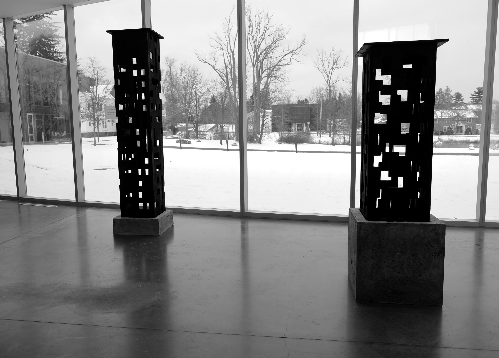

"Amongst those who go to sea there are the navigators who discover new worlds, adding continents to the earth and stars to the heavens: they are the masters, the great, the eternally splendid. Then there are those who spit terror from their gun-ports, who pillage, who grow rich and fat. Others go off in search of gold and silk under foreign skies. Still others catch salmon for the gourmet or cod for the poor. I am the obscure pearl-fisherman who dives into the deepest waters and comes up with empty hands and a blue face. Some fatal attraction draws me down into the abysses of thought, down into those innermost recesses which never cease to fascinate the strong. I shall spend my life gazing at the ocean of art, where others voyage or fight; and from time to time I'll entertain myself by diving for those green and yellow shells that nobody will want. So I shall keep them for myself and cover the walls of my hut with them." Flaubert's Parrot, Julian Barnes, p. 33
This piece represents the search for the shells to line one's hut, the kernels of truth to occupy one's mind; it is about introspection, trying to penetrate that tangled abyss of thoughts and ideas, as a life-long process. There are no windows to the soul, no keys to a secret chamber; looking within oneself is an intimate undertaking, and these frameworks of the mind, the towers, or, more accurately, huts stand as a testament to that dedicated passage of time.
Each cut in the wood was intentional and calculated; every dimension accounted for; just as one can direct their initial thoughts, I dictated the direction of the blade; however, just as thoughts, the final result, the little variations in each cut, came together in an unpredictable way. The wood panels, burnt by an unwieldy flame, stem from large concrete blocks, meant to represent one's core, that platonic soul that has tried to ascend to the divine in its chariot and has touched eternity.